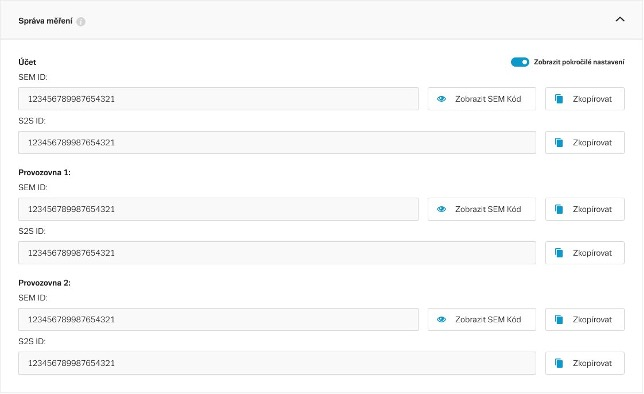

Kde najdu SEM ID?
SEM ID je unikátní identifikátor vašeho Sklik účtu potřebný pro implementaci SEM. Najdete ho v Sklik → Nastavení účtu.
Každý Sklik účet má přiřazeno jedno SEM ID. Pokud máte v účtu napojeny provozovny pro Seznam Nákupy, své SEM ID má i každá z těchto provozoven. Implementace SEM ID konkrétní provozovny zajistí, že dotazníky pro recenze budou přiřazeny správné provozovně.

Pokud má váš Sklik účet přiřazené provozovny pro inzerci Seznam Nákupy, pro každou z nich existuje samostatné kombinované SEM ID (obsahuje identifikátor účtu i provozovny). Toto kombinované SEM ID zajistí správné odesílání konverzí za účelem získání zpětné vazby (recenze produktů). Samostatné SEM ID účtu v takovém případě neimplementujte.
Pokud provozovnu přesunete do jiného Sklik účtu, kombinované SEM ID přestane platit. Budete na tuto změnu upozorněni a bude nutné aktualizovat SEM ID ve vaší implementaci.
SEM ID pro Server-to-Server (S2S)
Pokud implementujete SEM pomocí Server-to-Server měření, budete potřebovat samostatný identifikátor – SEM ID pro S2S. Zobrazí se po zapnutí přepínače Zobrazit pokročilé nastavení vpravo nahoře v Nastavení účtu – Správa měření.
Přehled identifikátorů
| Identifikátor | Kde ho najdete | Kde ho použijete |
|---|---|---|
| SEM ID | Nastavení účtu → SEM - správa měření | Přímý skript, GTM šablona, e-commerce plugin |
| Provozovna SEM ID | Nastavení účtu → SEM - správa měření | Přímý skript, GTM šablona, e-commerce plugin v případě propojené provozovny Zboží.cz |
| SEM ID pro S2S | Nastavení účtu → SEM - správa měření → přepínač Zobrazit pokročilé nastavení | Server-to-Server měření – parametr sem_id v payloadu |
Where to find SEM ID?
SEM ID is the unique identifier of your Sklik account required for SEM implementation. You can find it in Sklik → Account settings.
Every Sklik account has one SEM ID assigned to it. If your account has store outlets linked for Seznam Shopping, each of those store outlets also has its own SEM ID. Using the SEM ID of the specific store outlet ensures that customer satisfaction survey invitations are attributed to the correct store.
If your Sklik account has store outlets linked for Seznam Shopping, each outlet has a separate combined SEM ID (which includes both the account and store outlet identifier). This combined SEM ID ensures conversions are sent correctly for collecting product reviews. Do not implement the standalone account SEM ID in this case.
If you move a store outlet to a different Sklik account, the combined SEM ID becomes invalid. You will be notified of this change and will need to update the SEM ID in your implementation.
SEM ID for Server-to-Server (S2S)
If you implement SEM using Server-to-Server measurement, you will need a separate identifier – SEM ID for S2S. It appears after enabling the Show advanced settings toggle in the top right corner of Account settings – Event Management.
Identifier overview
| Identifier | Where to find it | Where to use it |
|---|---|---|
| SEM ID | Account settings → SEM – Event Management | Direct script, GTM template, e-commerce plugin |
| Store outlet SEM ID | Account settings → SEM – Event Management | Direct script, GTM template, e-commerce plugin when a Seznam Shopping store outlet is linked |
| SEM ID for S2S | Account settings → SEM – Event Management → Show advanced settings toggle | Server-to-Server measurement – sem_id parameter in the payload |